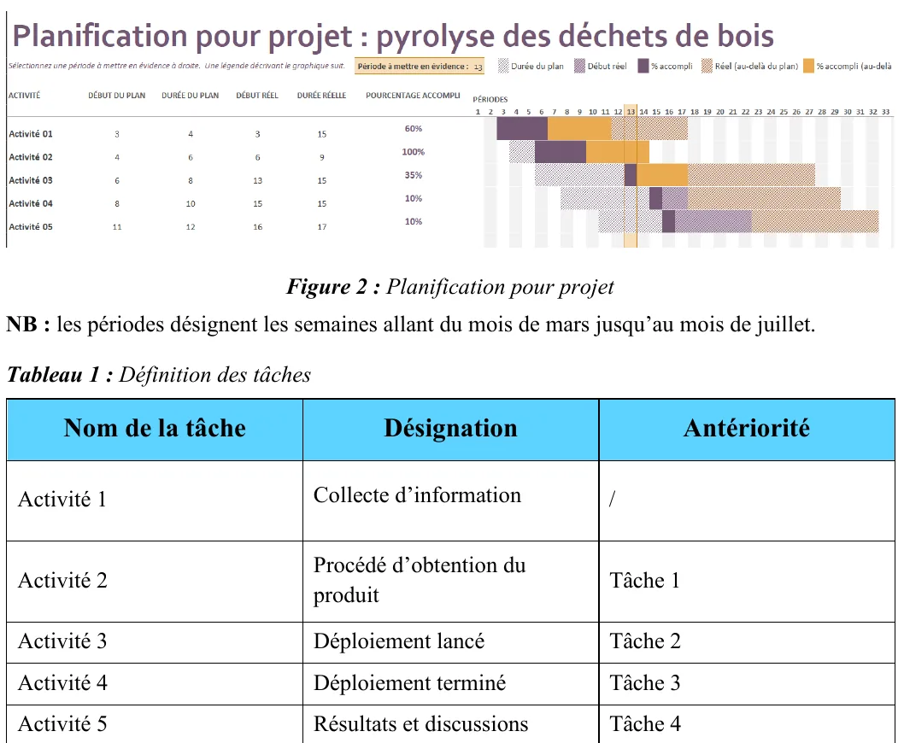
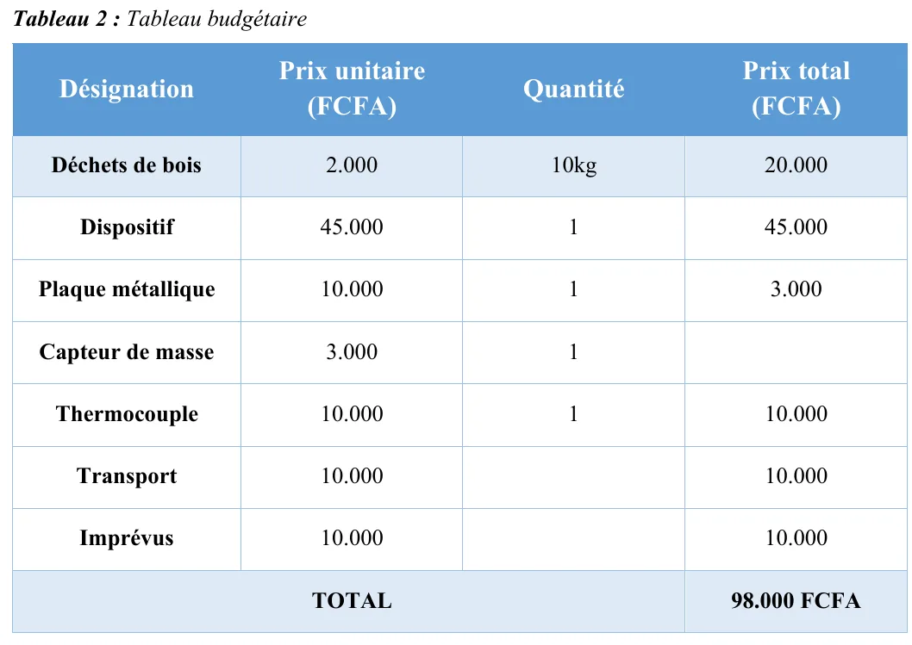
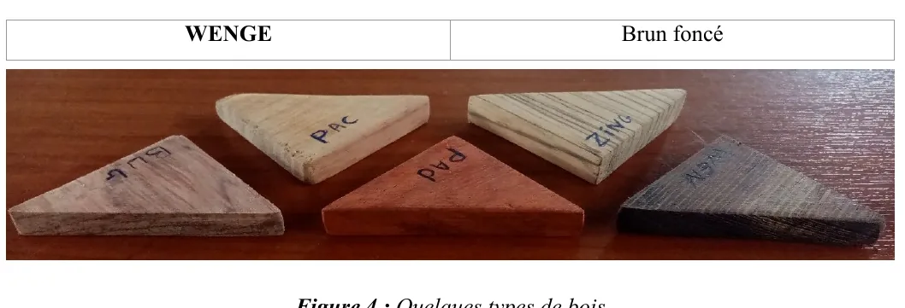
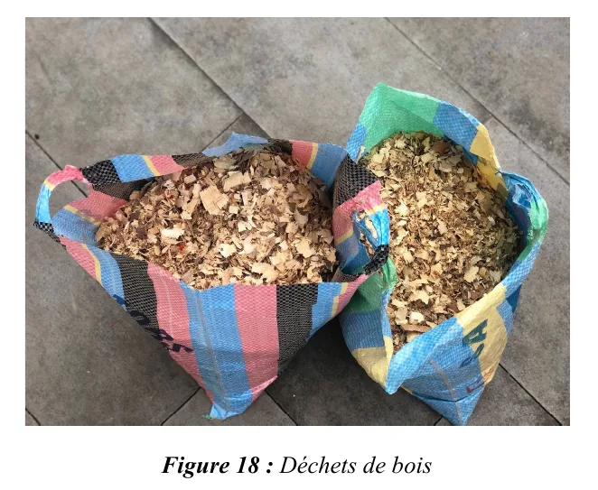
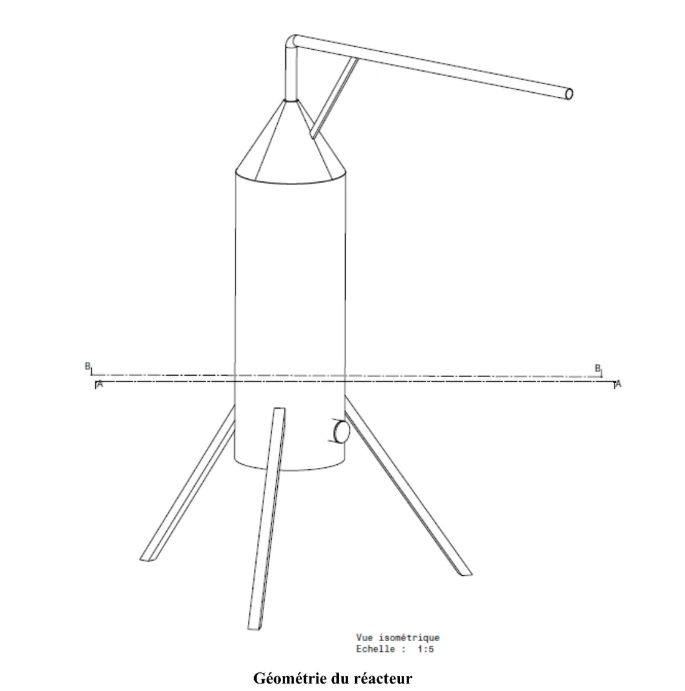
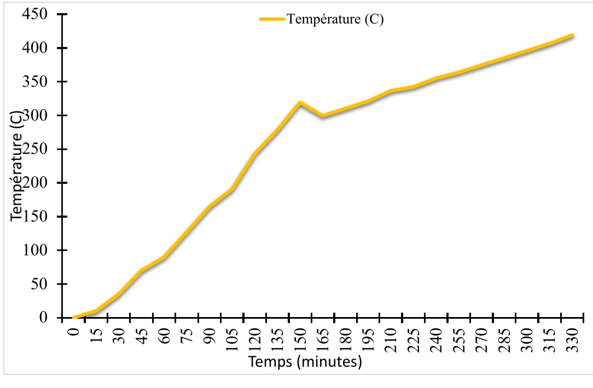

Pilotage de projet · Données · Projet tutoré
Pyrolyse : valoriser les déchets de bois en biochar
Mené comme un vrai projet : objectifs, jalons, calendrier, budget de 98 000 FCFA, et un réacteur construit à la main
Le problème
Le bois, traité ou non, représente environ 27 % des déchets dangereux du Cameroun, près de 200 000 m³ mis en décharge chaque année. Peut-on en faire du biochar plutôt que de l'enterrer ?
Un projet piloté
Nous l'avons mené comme un projet, pas comme une expérience improvisée : objectifs, jalons, un calendrier de mars à juillet et un budget de 98 000 FCFA, fixés dès le départ.

(ouvre le fichier dans un nouvel onglet)
(ouvre le fichier dans un nouvel onglet)Le montage
Un réacteur de laboratoire à lit fixe, alimenté en copeaux de bois de vène, que nous avons instrumenté nous-mêmes : un capteur de masse et un capteur de température PT100 reliés à une carte Arduino, avec le câblage simulé d'abord dans Proteus 8 pour vérifier le circuit avant de le construire.

(ouvre le fichier dans un nouvel onglet)
(ouvre le fichier dans un nouvel onglet)
(ouvre le fichier dans un nouvel onglet)Les résultats
Masse et température relevées toutes les cinq à quinze minutes, de la température ambiante à plus de 550 °C : vitesse de chauffe de 33,6 K par minute. Nous avons calculé l'énergie d'activation par deux méthodes de référence, pour qu'elles se contrôlent l'une l'autre : Kissinger-Akahira-Sunose 0,81 kJ/mol et Miura-Maki 1,31 kJ/mol. La régression donne un coefficient de détermination de R² = 0,975.

(ouvre le fichier dans un nouvel onglet)Ce que nous avons proposé
Un réacteur en deux parties, un four et une chambre d'alimentation, avec un flacon de condensation pour capter les gaz condensables. Le traitement des gaz nocifs fait partie du projet : nous ne l'avons pas laissé hors périmètre.
Ce que j'en retiens pour piloter des opérations : on ne mesure pas un phénomène sans instrument, alors on construit l'instrument, et on tient le tout avec des objectifs, des jalons et un budget.